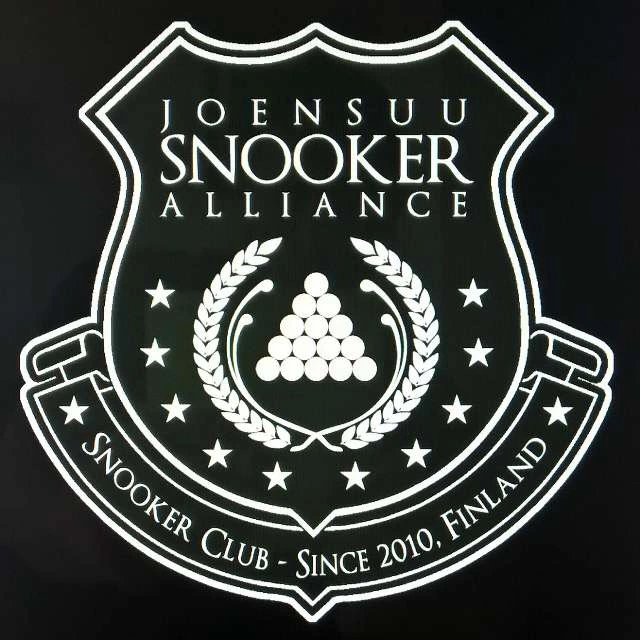

Joensuu Snooker Alliance ry on Suomen Biljardiliitto ry:n jäsenseura, joka tarjoaa jäsenilleen mahdollisuuden harrastaa snookeria haluamallaan tasolla. Seuran tiloista löytyy 5 täysimittaista Shender-snookerpöytää.

Joensuu Snooker Alliance ry
Pilkontie 4
80130 Joensuu
puh. 050 589 9655
Facebook
Instagram